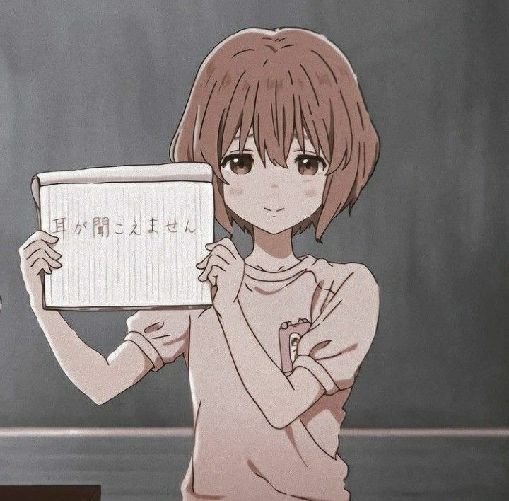
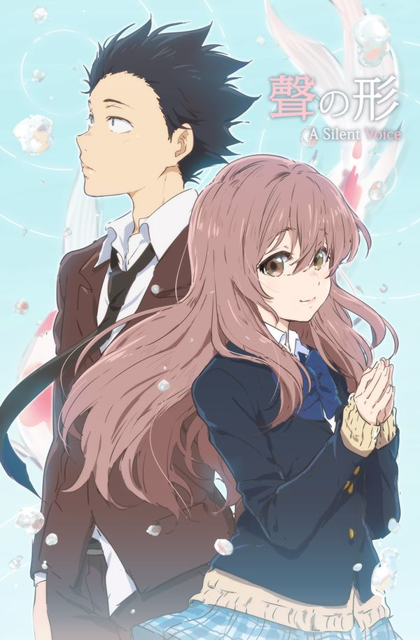
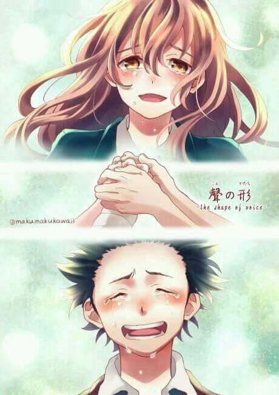

Koe no katachi (聲の形)
Sinopsis
Como quisiera que jamás nos hubiésemos conocido. Como quisiera que nos volviésemos a ver una vez más. Un chico que sí puede oír, Ishida Shouya, y una estudiante de traslado que no, Nishimiya Shouko. Un fatídico día, sus caminos se cruzan, y Shouya provoca que Shouko sea el punto de bullying de toda la clase. Pero no después de mucho tiempo, el bullying deja de apuntar a Shouko para terminar dirigiéndose en contra de Shouya. Años más tarde, Shouya siente de corazón que debe volver a ver a Shouko una vez más. Palabras de la autora: “Personas viviendo en aislamiento. Llevé a cabo esta historia en aras de escribir sobre personas que viven vidas distantes y aisladas. Nada me haría más feliz que si todos ustedes pudiesen leer mi obra.”
Pelicula
En el último capítulo del manga, publicado en la edición No. 51 del 2014 del Shūkan Shōnen Magazine publicado por Kōdansha, se anunció que Koe no Katachi contaría con una adaptación animada. En el séptimo y último tankōbon del manga, publicado en diciembre del 2014 se dio la noticia que la adaptación animada que se había anunciado antes, sería en forma de película.Hasta octubre del 2015, se dio a conocer que la película sería animada por Kyoto Animation (que ha animado series como Suzumiya Haruhi no Yūutsu, CLANNAD, Hyōka, Hibike! Euphonium, etc.) y dirigida por Naoko Yamada (directora de series como K-ON! y Tamako Market, del mismo Kyoto Animation). Además, en diciembre del 2015 se confirmó que Shochiku distribuiría la película en Japón y que esta se estrenaría durante la temporada de otoño de 2016. En abril de 2016 se puso en línea la página oficial de la película; con ella se reveló también su teaser y su póster preliminar, además de anunciarse la participación de Reiko Yoshida (Non Non Biyori, Yowamushi Pedal, etc.) para trabajar en el guion y de Futoshi Nishiya (Nichijō, Free!, etc.) en el diseño de personajes. La película se estrenó el 17 de septiembre de 2016.
Historia
La historia gira en torno a Shoko Nishimiya, una estudiante de primaria que es sorda de nacimiento y que al cambiarse de colegio comienza a recibir acoso escolar por parte de sus nuevos compañeros. Uno de los principales responsables es Ishida Shouya quien termina por forzar que Nishimiya se cambie de escuela. Como resultado de los actos contra Shoko las autoridades del colegio toman cartas en el asunto y el curso señala como único responsable a Ishida, quien comienza a sentir el acoso impuesto por sus propios compañeros, al mismo tiempo que termina aislándose de los que alguna vez fueron sus amigos. Años después, Ishida intenta corregir su mal actuar, buscando la redención frente a Nishimiya.
